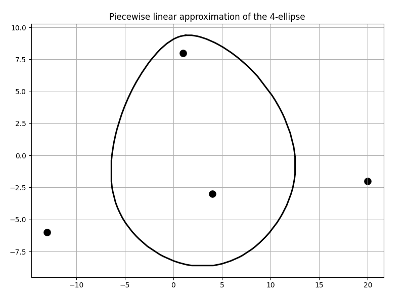
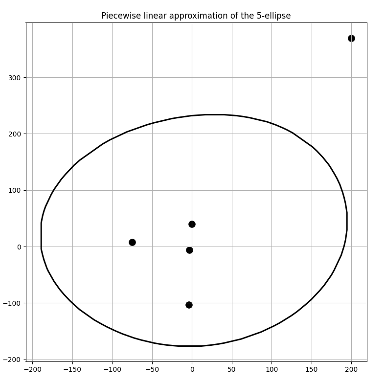

Monte Carlo simulation
Stanislaw Ulam\(^*\) invented the Monte Carlo
Stanislaw Ulam
Polish born mathematician whose ideas helped physicist Edward Teller develop the idea of the first thermonuclear weapons during the Manhattan Project 1. Ulam also invented the concept of Cellular Automata 2 and the Monte Carlo technique.
technique during the former’s time at Los Alamos 3. During a period of convalescence, curiosity in trying and failing to combinatorially calculate the probability of drawing a flush set from a deck of cards, he exhasperatedly resorted to repeating the experiment many times and simply counting up the number of times he managed a successful draw 4. Following a collaboration with John von Neumann\(^*\), he then published
John von Neumann
Hungarian born polymath known for extraordinary contributions in many, many fields from logic and quantum mechanics to game theory and stochastic computing.5
his work, naming the technique the Monte Carlo method after the famous Monte Carlo casino in Monaco due to the similarities of the technique to the way the roulette wheel works.
The technique has since then been used in areas such as optimization, numerical approximation of areas and bounds, and probability estimations.
Monte Carlo based approximation
The idea is best illustrated with an example (which quickly revealed itself upon closer inspection to be worthy of its own post).
For those familiar with the Python library Numpy, there exists the function random.randn() which returns (pseudo) randomly\(^*\) sampled
Pseudo randomness
The nature of computer generated numbers which appear to be statistically random but will repeat or express a discernible pattern after some large, finite number of elements.
data of whatever shape is specified inside its arguments. The randn function is also described as choosing its sample points from a standard normal distribution. We can verify this as being the case by trying to sample some N number of scalars using the function and plotting them on a 1-dimensional histogram as shown below where N is gradually increased from 20, to 100, to 1000 to 200000, getting closer and closer to the expected characteristic gaussian bell curve centered at 0.
The n-ellipse
Fig.1: A tri ellipse
In the 2-dimensional sense, an ellipse is a locus of points at constant distance from 2 fixed points. A circle is a special case of the ellipse where all the points are at a constant distance from 1 fixed point. Extending the same generalization to any \(n\) points, we can say that by virtue of the circle being a 1-ellipse and the regular (2 focal point) ellipse the 2-ellipse, the n-ellipse can be described mathematically as:
\[ E_n(x,y) = \Biggl\{ (x,y) | \sum_{i=1}^n \sqrt{ (x-u_i)^2 + (y-v_i)^2 } = d \Biggl\}\]
The equation above is understood as being the sum (the big \(\sum\) symbol) of the euclidean distances (the square root and the terms inside) from any point on the n-ellipse boundary \((x,y)\) to each individual focus point \((u_i, v_i)\) equal some constant \(d\).
Areas of closed curves
The area of a (finite) closed region bound by one or more curves can be calculated analytically using Green’s theorem\(^*\) involving a double integral. However, this is possible only if there exists a way to parameterize the equation defining a locus of points on a curve, i.e represent the (multivariate) function in terms of a single variable. And many times this is possible as in this example of an imaginary curve \(f(x, y, z)\), where some co-ordinate transfer could result in:
\[g(u) = x; \hspace{1cm} h(u) = y; \hspace{1cm} k(u) = z\]
allowing us to rewrite in parametric form for some arbitrarily picked \(f\):
\[f(x, y, z) = x^2 + y + \frac{13}{z} = g^2(u) + h(u) + \frac{13}{k(u)}\]
This has turned the curve into a parametric form in just a single variable \(u\) which can now be integrated with correct bounds to compute the area.
But, not all curves can be converted into such a parametric form, and so they cannot be integrated in order to analytically compute the area they enclose. And in such cases, numerical alternatives must be considered. For polygons, even non-convex, a divide and conquer\(^*\) approach usually does it.
So, what about smooth curves like the n-ellipse? Thats’ when I had the idea of using the Monte Carlo simulation to approximate the area of the n-ellipse. The steps I took are explained in order below along with snippets of code.
Initializing variables
The number of points (the bigger the better as we saw in the toy example), the foci, the constant distance \(d\) and empty lists for points inside and outside the n-ellipse to be calculated are defined.
def __init__(self, N, foci, distance):
self.N = N
self.foci = foci
self.d = float(distance)
self.dist_matrix = scipy.spatial.distance.pdist(self.foci)
self.inside = []
self.outside = []Sampling points in a uniform grid and approximating the area
The most important function performs the task of sampling points from a uniform grid of a fixed density and then computing which points are such that the sum of their distances from the n foci is lesser than or equal to \(d\), appending them to a separate list than the points at distance greater than \(d\). When all the points have so been sorted, we then calculate the ratio of the number of points inside to the total number of points and adjust for the scaling with a precalculated factor \(f\).
def param_area(self):
# calculate the 'f' factor within bounds of which to sample pts
f = abs(np.max(foci)) + abs(np.min(foci))
f = np.max((f, self.d)) * 2.5
# Sample uniformly gridded points
X = np.linspace(-f/2, f/2, int(np.sqrt(self.N)))
Y = np.linspace(-f/2, f/2, int(np.sqrt(self.N)))
x, y = np.meshgrid(X, Y)
x = x.reshape(-1);
y = y.reshape(-1)
# Compute points sum of distances to the foci!
for i in range(self.N):
pt = np.array([x[i], y[i]])
dist = 0
for j in range(self.foci.shape[0]):
dist += math.dist(pt, self.foci[j,:])
# separate the points as being inside/outside the ellipse
if dist <= self.d:
self.inside.append(pt)
else:
self.outside.append(pt)
self.inside = np.asarray(self.inside)
self.outside = np.asarray(self.outside)
# Computing the approximation of the area of the n-ellipse:
self.area = (f**2) * len(self.inside) / self.N
return self.areaThe most important points in the snippet just above are summarized as such:
The \(f\) factor is an attempt to estimate the range of the x and y for the sample points so that there will be points both inside and outside the n-ellipse that the given set of foci and \(d\) are going to produce. Sometimes it is difficult to gauge it since we might fall short of the bounds of the n-ellipse itself, or on the other extreme - end up with way too many points outside the ellipse, making the approximation chunky and inaccurate.
For readers familiar with the Python
numpy.meshgridfunction, the inputs are interleaved to produce every possible combinatorial pair of values. When these outputs are reshaped into 1-dimensional arrays (using.reshape(-1)), we want them to be of sizeN, since that was the number of points we wanted to sample! And therefore, initially producingmeshgridinputs of size \(\sqrt{N}\) each will give sample point \(x\) and \(y\) coordinates of desired length \(N\).The area obviously is not just the ratio of the number of points inside the ellipse to
N. It needs to be scaled by \(f^2\), once for the x axis and once for the y axis, since both axes have points extending from \(-f/2\) to \(f/2\).
Computing the n-ellipse shape
Once we have the set of points that lie inside or on the boundary of the ellipse, running my home-made gift-wrapping convex hull algorithm produced convincing results for a dense enough sample grid. The code and explanation for the convex hull can be found in my post on the same.
Outputs from a few interesting runs are shown in the images below.
Given the 4 foci at the points \((1,8), (4, -3), (-13, -6)\) and \((20,-2)\) with sum of distances chosen to be \(d=57\), the following was obtained as shown in Fig.2 and Fig.3.
Fig 3. Piece-wise linear 4 ellipse boundary approximated by the convex hull algorithm
A set of 5 foci with a much bigger \(d\) value 300 produced the following results as seen in Figures 4 and 5. It was calculated to have an area of 123715.15455322266 sq. units.
Fig 5. Piece-wise linear 5 ellipse boundary approximated by the convex hull algorithm
Convergence to a circle
Three pairs of images of an 8 focus ellipse with \(d\) values 334, 650 and 3400 are shown for comparison in the Figures 6, 7 and 8 along with their approximated areas. And the most interesting takeaway is that the bigger the \(d\) value gets, the closer to a circle the generated n-ellipse looks, perhaps implying an eventual convergence, which is a reasonable conclusion! This is because the bigger the \(d\) value, the more infinitesimally closer the foci come to becoming one central point and the infinitely far away from the boundary of that n-ellipse which will have become a circle.
Future scope
I considered the results I got to be be quite successful and the n-ellipse allowed me to explore perhaps one of the most interesting applications for area estimation of a closed curve using the Monte Carlo technique that I had come across. However, this isn’t the end of it; a few ideas I have for follow up work on the same are listed below (that someday I hope to make more posts about!):
Replacing the convex hull algorithm with a spline based boundary estimation Bezier curves
A continuous curve constructed passing through a given number of points with boundary conditions and smoothness constraints.Systematically better the calculation of the scaling factor \(f\).
Update the images on this post to have a better color scheme.